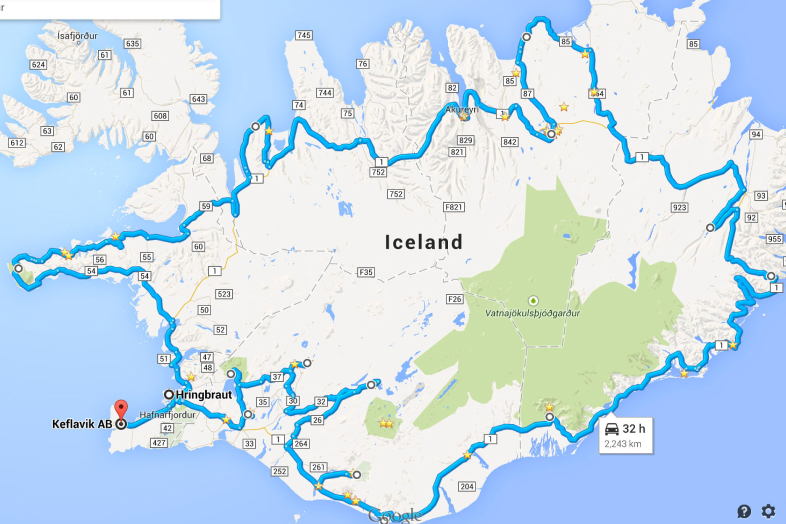
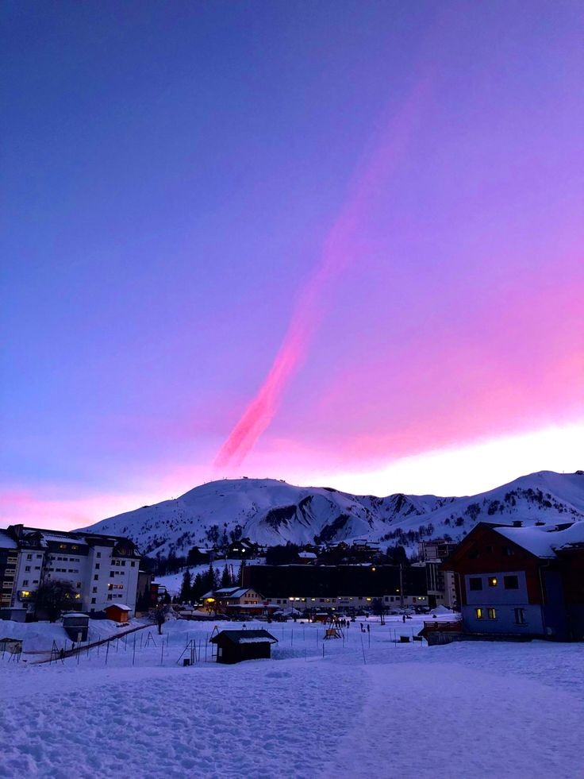

ICELAND
Where Ice Meets the Wild.
Cross black-sand coasts, glacier valleys, and quiet roads shaped by fire and frost.

.png)

Discover Iceland
Navigate through stunning locations, from the shimmering ice caves of Vatnajökull National Park to the mesmerizing Northern Lights illuminating the night sky. Each click unveils hidden gems like the enchanting Blue Lagoon, where you can soak in geothermal waters surrounded by snow-covered hills. With detailed markers highlighting popular attractions, cozy accommodations, and exhilarating activities such as snowmobiling and glacier hiking, our map ensures you won't miss a moment of Iceland's winter magic. Let your adventure begin!
Alpines offers a variety of places you can tour this winter, such as:
- Höfn
- Bláfjöll
- Egilsstaðir
- Akureyri
Höfn
Nestled along the southeastern coast, Höfn is a gateway to breathtaking natural wonders. This charming town is not only famous for its delicious seafood but also offers stunning views of the Vatnajökull glacier. Visitors can embark on glacier tours or explore nearby Jökulsárlón, a mesmerizing glacial lagoon filled with floating icebergs. The surrounding landscapes provide endless opportunities for photography, hiking, and discovering the rugged beauty of Iceland's coast.
Bláfjöll
Just a short drive from Reykjavik, Bláfjöll is a winter sports paradise. This popular ski resort offers a variety of slopes suitable for all skill levels, making it an ideal destination for both beginners and experienced skiers. Beyond skiing, visitors can enjoy snowboarding, snowshoeing, and sledding in the picturesque surroundings. The stunning views of the surrounding mountains and valleys are a treat for nature lovers.
Egilsstaðir
Egilsstaðir, the largest town in East Iceland, serves as a hub for exploring the breathtaking landscapes of the region. In winter, the town becomes a charming base for discovering nearby attractions such as the stunning waterfalls of Hengifoss and the serene beauty of Lake Lagarfljót. The surrounding East Fjords offer incredible hiking opportunities and the chance to spot reindeer in their natural habitat. The area is also known for its unique geothermal hot springs, providing a perfect way to relax after a day of adventure.
Akureyri
Akureyri is a vibrant city that offers a perfect blend of urban charm and natural beauty. In winter, the city becomes a snowy wonderland, with plenty of outdoor activities such as skiing at the nearby Hlíðarfjall ski resort and exploring the stunning landscapes surrounding Lake Mývatn. The city itself boasts cozy cafes and fascinating museums, including the Akureyri Art Museum.

Höfn Nature Package
Embark on a captivating winter adventure in Höfn, the "Lobster Capital of Iceland." This package includes a cozy hotel with stunning views of Vatnajökull glacier. Enjoy a guided tour of Jökulsárlón glacial lagoon, where you'll marvel at floating icebergs and perhaps spot seals. Savor a delicious seafood dinner featuring the local lobster delicacy, and take a scenic drive along the picturesque coastline. Optional activities such as snowmobiling and ice climbing can also be arranged.
Akureyri Tour Package
This three-night package offers a perfect escape to experience the beauty of Iceland's second-largest city. Immerse yourself in the festive atmosphere of the Christmas season, explore the charming town center, and indulge in delicious local cuisine. Embark on winter adventures such as snowmobiling, ice fishing, or relaxing in a geothermal spa. Witness the mesmerizing Northern Lights dancing across the night sky while enjoying cozy accommodations and guided activities.
Bláfjöll Ski Package
Get ready for an exhilarating winter getaway at Bláfjöll Ski Resort! This package includes two nights of accommodation in a ski lodge with easy access to the slopes. Enjoy ski passes for skiing and snowboarding across a variety of runs. Beginners can join a group lesson, while experienced visitors can explore more challenging trails. Optional guided snowshoeing and sledding tours are also available for travelers who want to explore beyond the slopes.